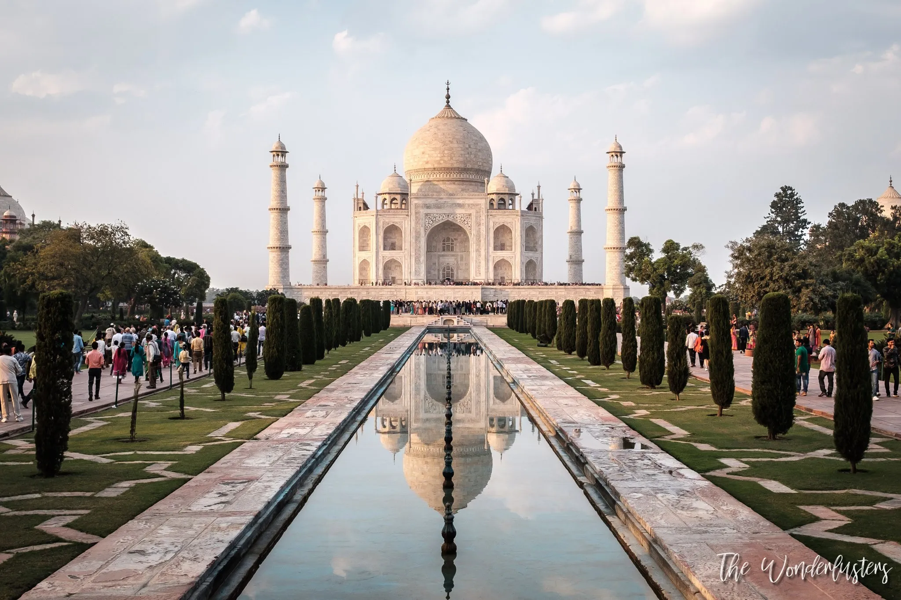
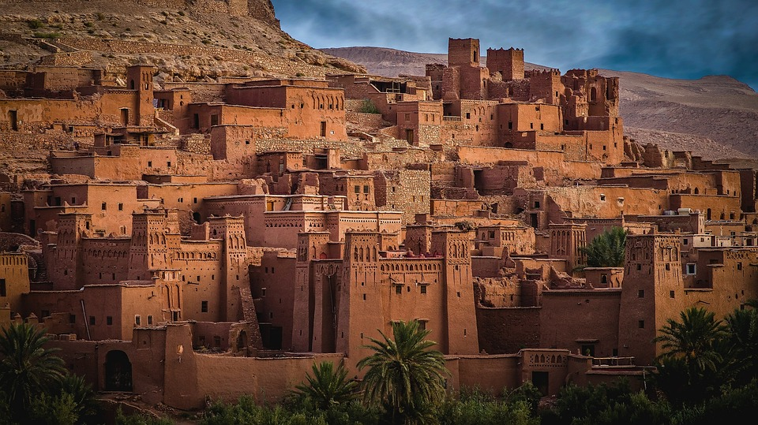
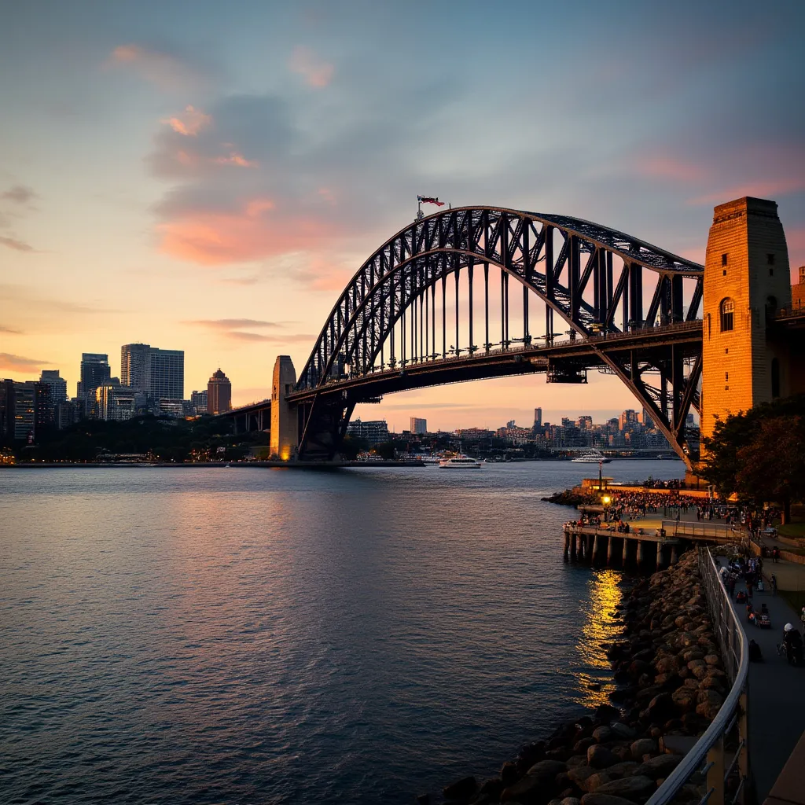
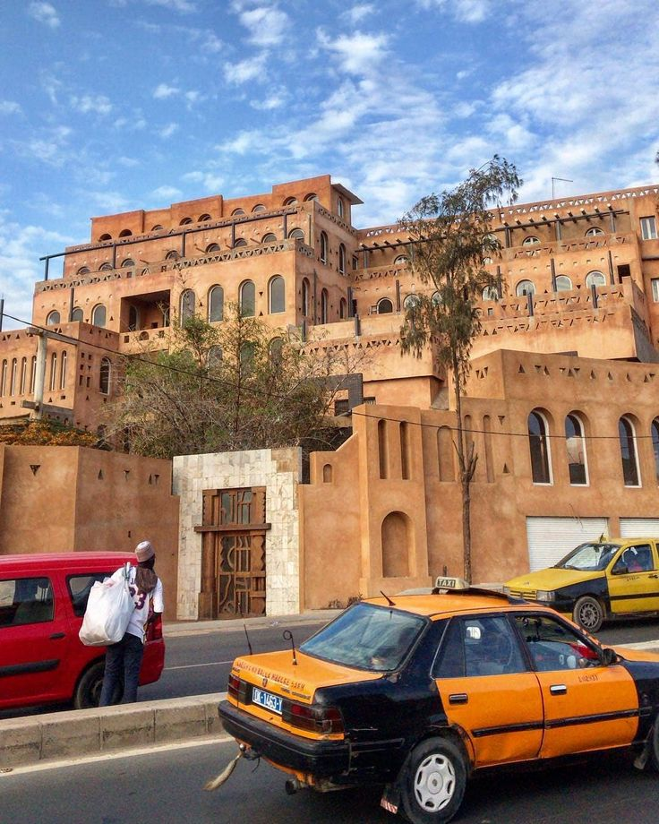
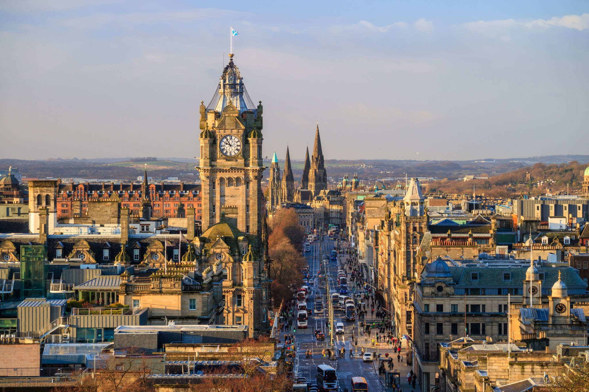

L'Inde (en anglais : India), historiquement et constitutionnellement aussi appelé le Bharat (en hindi : भारत / Bhārat) et en forme longue la république de l'Inde (en hindi : भारत गणराज्य / Bhārat Gaṇarājya ; en anglais : Republic of India), est un pays d'Asie du Sud. Sa capitale est New Delhi.
| Superficie | Ville | Régime |
| 3,287 millions km² | 7 935 villes | République fédérale |
0 like

Le Maroc, pays d'Afrique du Nord sur le littoral de l'Atlantique et de la Méditerranée, se distingue par ses influences berbères, arabes et européennes. La capitale est Rabat.
| Superficie | Ville | Régime |
| 446.550 km² | 1 500 villes | Monarchie constitutionnelle |
0 like

L'Australie est un pays et continent entouré par les océans Indien et Pacifique. Ses principales villes sont Sydney, Melbourne, et Canberra.
| Superficie | Ville | Régime |
| 7,741 millions km² | 86 villes | Monarchie constitutionnelle |
0 like

Le Sénégal, en forme longue la république du Sénégal, est un État d'Afrique de l'Ouest bordé à l'ouest par l'Océan Atlantique.
| Superficie | Ville | Régime |
| 196.190 km² | 113 communes de ville | Régime présidentiel |
0 like

Située sur une colline, Édimbourg est la capitale de l'Écosse. Le pays a une riche histoire avec des châteaux anciens.
| Superficie | Ville | Régime |
| 77.910 km² |
|
Régime présidentiel |
0 like